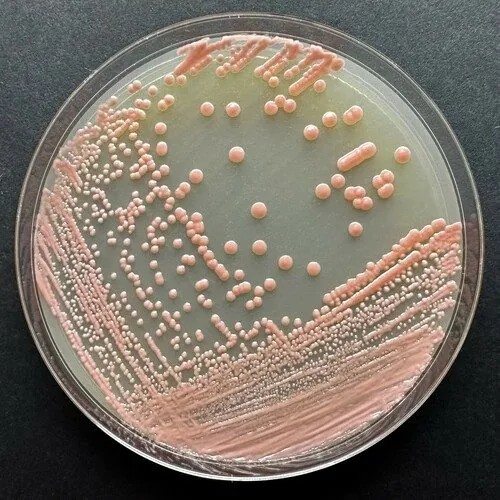

真菌 · 真菌界
红酵母 Rhodotorula mucilaginosa

菌落呈橙红色的环境酵母，广泛存在于空气、土壤和食物表面，能产生类胡萝卜素，但也是免疫低下者的条件致病菌。
- 分类
- 门担子菌门纲微球黑粉菌纲目锁掷酵母目科锁掷酵母科属红酵母属
- 栖息环境
- 空气、土壤、水、植物表面和潮湿食品，冷库与导管等潮湿环境
- 地理分布
- 全球分布，环境中普遍存在
- 保护级别
- 暂无评估（条件致病酵母，非保护对象）
物种志
红酵母是担子菌门锁掷酵母目的单细胞真菌，细胞呈椭圆形，通过出芽繁殖。它的菌落呈橙红色至珊瑚红色，颜色来自细胞中合成的类胡萝卜素。红酵母广泛存在于空气、土壤、水、植物表面和潮湿的食品中，是环境中最常见的酵母之一。
红酵母在食品工业中可用于生产类胡萝卜素和饲料添加剂，但也是食品腐败和冷冻食品变质的常见菌。对人的健康而言，红酵母属于条件致病菌，免疫力低下者可能发生菌血症、腹膜炎等感染，医院中也有因导管污染引发感染的报道。预防以保持食品和环境卫生、医疗器械规范消毒为主；免疫功能低下者应避免接触霉变食物和潮湿环境，实验室中它也常用于类胡萝卜素研究。
形态与习性
- 分类担子菌门锁掷酵母目锁掷酵母科红酵母属
- 菌落橙红色至珊瑚红色，颜色来自类胡萝卜素
- 繁殖出芽生殖，单细胞酵母
- 生态空气、土壤、水和潮湿食品中普遍存在
- 应用可生产类胡萝卜素和饲料添加剂
- 风险食品腐败菌，也是免疫低下者的条件致病菌
趣味知识
- 红酵母的菌落呈橙红色，颜色来自它合成的类胡萝卜素。
- 它广泛存在于空气、土壤和潮湿食品中，也是冷库食品的腐败菌。
- 对免疫力低下者，红酵母可能引起菌血症等感染，属于条件致病菌。